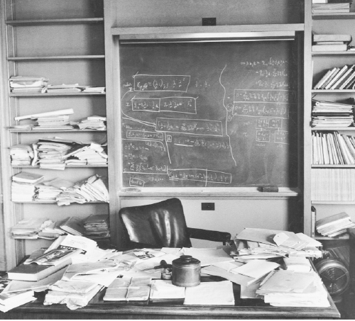

Phòng làm việc của Einstein như khi ông rời đi
Khi Ngài Isaac Newton qua đời, thi thể của ông được đặt trang trọng trong một gian phòng Jerusalem tại Tu viện Westminster, và những người hộ tang gồm có vị đại pháp quan, hai công tước và ba bá tước. Einstein đáng lẽ cũng có thể có một đám tang tương tự, được tô điểm rực rỡ với sự tham dự của những người quyền cao chức trọng trên khắp thế giới. Thế nhưng, thay vào đó, theo ý nguyện của mình, ông được hỏa táng tại Trenton vào ngay buổi chiều ngày ông qua đời, trước khi cả thế giới biết tin. Chỉ có khoảng 12 người có mặt tại đài hóa thân, trong đó có Hans Albert Einstein, Helen Dukas, Otto Nathan và bốn thành viên trong gia đình Bucky. Nathan đọc một số câu thơ của Goethe rồi mang tro của Einstein rắc xuống dòng sông Delaware.
“Không một ai đóng góp nhiều như ông cho công cuộc phát triển tri thức mạnh mẽ của thế kỷ XX”, Tổng thống Eisenhower tuyên bố. “Nhưng cũng không ai khiêm cung như ông khi sở hữu sức mạnh tri thức, thứ quyền lực mà chắc chắn không có trí tuệ sẽ gieo rắc chết chóc.” Ngày hôm sau, tờ New York Times viết chín bài cộng với một bài xã luận về cái chết của ông: “Con người đứng trên Trái đất nhỏ bé này, chăm chú nhìn vào hằng hà sa số các ngôi sao, những đại dương cuộn sóng và những cái cây đung đưa theo gió – và trầm trồ. Tất cả điều này có nghĩa là gì? Làm sao nó có thể xảy ra? Người băn khoăn suy tư nhất xuất hiện trong chúng ta trong ba thế kỷ qua chính là Albert Einstein.”
Einstein đã nhất quyết đòi rắc tro của mình để nơi yên nghỉ cuối cùng của ông không phải là chỗ tôn thờ bệnh hoạn. Nhưng có một bộ phận trên cơ thể ông đã không được hỏa táng. Trong một hồi kịch tính có vẻ nực cười nhưng không quá rùng rợn, cuối cùng, bộ não của Einstein lại trở thành một di vật lang thang suốt bốn thập kỷ.
Vài giờ sau khi Einstein qua đời, thủ tục khám nghiệm tử thi theo thông lệ được một nhà bệnh học tại bệnh viện Princeton, Thomas Harvey, thực hiện. Harvey là một tín đồ Quaker sinh trưởng tại một thị trấn nhỏ, tính tình nhẹ nhàng, và có một cách tiếp cận khá mơ mộng đối với chuyện sống chết. Khi Otto Nathan lúc này đang quẫn trí im lặng theo dõi, Harvey đã tách và kiểm tra từng bộ phận chính của Einstein, ông kết thúc bằng việc dùng chiếc cưa điện cắt sọ và lấy bộ não của Einstein ra. Khi ông khâu cơ thể lại, ông tự quyết định ướp và giữ lại bộ não của Einstein mà không xin phép ai.
Buổi sáng hôm sau, trong một giờ học lớp Năm ở một ngôi trường của Princeton, người giáo viên hỏi các học sinh đã biết tin gì chưa. “Einstein qua đời,” một cô bé nói, háo hức là người đầu tiên thông báo tin đó. Nhưng cô bé này nhanh chóng bị qua mặt bởi cậu bé chẳng mấy khi phát biểu gì ngồi phía cuối lớp. “Ba em đã lấy não của ông ấy rồi ạ,” cậu bảo.
Nathan, cũng như cả gia đình của Einstein, đều kinh sợ khi phát hiện ra chuyện này. Hans Albert gọi điện đến bệnh viện để khiếu nại nhưng Harvey một mực khẳng định rằng việc nghiên cứu bộ não của Einstein có thể có giá trị khoa học. Có lẽ Einstein cũng muốn thế, ông nói. Người con trai, không biết rõ các quyền pháp lý và thực tế của mình trong vấn đề này, miễn cưỡng cho qua.
Rất nhanh, Harvey bị những người muốn có bộ não của Einstein hoặc một phần của nó bủa vây. Ông được triệu tập tới Washington để gặp gỡ các quan chức trong đơn vị bệnh học của Quân đội Hoa Kỳ, nhưng bất chấp đề nghị của họ, ông từ chối giao lại tài sản quý giá của mình. Việc bảo vệ bộ não Einstein lúc này trở thành một nhiệm vụ. Cuối cùng, ông quyết định nhờ bạn bè của mình tại Đại học Pennsylvania cắt bộ não của Einstein ra thành những khoanh nhỏ để ông có thể cho vào hai lọ thủy tinh và để chúng phía sau chiếc xe Ford.
Theo năm tháng, trong một quá trình vừa ngây thơ vừa kỳ quái, Harvey gửi các khoanh của bộ não cho các nhà nghiên cứu ngẫu nhiên mà ông có thiện cảm. Harvey không đòi hỏi phải nghiên cứu theo một quy trình nghiêm ngặt, và trong nhiều năm, không có công trình nào được công bố. Trong thời gian này, ông nghỉ việc tại Bệnh viện Princeton, bỏ vợ, tái hôn vài lần và chuyển từ New Jersey tới Missouri, Kansas. Ông thường rời mỗi nơi mà không để lại địa chỉ nhận thư, những phần còn lại của bộ não Einstein luôn được ông giữ bên mình.
Thỉnh thoảng có một phóng viên tình cờ biết được câu chuyện, lên đường tìm kiếm Harvey, và gây ra sự xáo động nho nhỏ trên truyền thông. Năm 1978, Steven Levy, khi đó đang làm cho tờ New Jersey Monthly và sau này là Newsweek, tìm ra Harvey ở Wichita; tại đây Harvey lôi chiếc bình miệng rộng có chứa các khoanh não của Einstein từ một chiếc hộp có nhãn “Rượu táo Costa” nằm sau một thùng đá picnic màu đỏ bằng nhựa ở góc văn phòng. Hai mươi năm sau, Harvey lại bị săn lùng lần nữa, lần này là bởi Michael Paterniti, một cây bút tự do và dạt dào cảm xúc đang làm việc cho tạp chí Harper’s, ông này đã biến chuyến đi đường trường ngang dọc khắp nước Mỹ của mình cùng với Harvey và bộ não trên chiếc xe Buick đi thuê trở thành bài viết đoạt giải và một cuốn sách bán chạy nhất, Driving Mr. Einstein [Lái xe chở ông Einstein].
Điểm đến của họ là California, ở đây họ đến thăm cháu gái của Einstein, Evelyn Einstein. Evelyn lúc này đã ly dị, hiện đang làm một công việc lương thấp và vật lộn với cảnh đói nghèo. Những chuyến đi vòng quanh của Harvey cùng bộ não khiến Evelyn sởn da gà nhưng bà quan tâm đặc biệt đến một bí mật mà bộ não đó có thể trả lời. Evelyn là con gái nuôi của vợ chồng Hans Albert và Frieda, nhưng thời gian và hoàn cảnh ra rời của bà không rõ ràng. Bà nghe được những lời đồn khiến bà ngờ rằng mình có thể là con gái ruột của Einstein. Bà được sinh ra sau khi Elsa qua đời, khi Einstein dành thời gian ở bên nhiều người phụ nữ khác nhau. Có lẽ bà là kết quả của một trong số những lần quan hệ như vậy, và Einstein đã sắp xếp để bà được Hans Albert nhận làm con nuôi. Hợp tác với Robert Schulmann, biên tập viên ban đầu cho những bài báo của Einstein, Evelyn mong được thấy kết quả khi nghiên cứu ADN được lấy ra từ bộ não của Einstein. Không may là cách Harvey ướp não khiến người ta không thể chiết ADN khả dụng cho việc đó, vì vậy những thắc mắc của Evelyn không bao giờ được giải đáp.
Năm 1998, sau 43 năm là người bảo vệ di động cho bộ não của Einstein, Thomas Harvey, lúc đó 86 tuổi, quyết định đã đến lúc chuyển giao lại trách nhiệm này. Vì vậy, ông gọi cho người hiện đang kế nhiệm mình làm nhà nghiên cứu bệnh học tại Bệnh viện Princeton và đưa nó đến đây.
Trong số hàng chục người được Harvey tặng các khoanh não của Einstein suốt các năm, chỉ có ba người công bố các nghiên cứu khoa học có giá trị. Nghiên cứu đầu tiên là của một nhóm ở Berkeley do Marian Diamond đứng đầu. Theo nghiên cứu này có một vùng não của Einstein, thuộc vùng vỏ não ở thùy đỉnh có tỷ lệ tế bào thần kinh đệm trên nơ-ron cao hơn người bình thường. Các tác giả nhận định, điều này có lẽ cho thấy các nơ-ron của Einstein sử dụng và cần nhiều năng lượng.
Một vấn đề với nghiên cứu này là bộ não 76 tuổi của Einstein được so sánh với bộ não của 11 người qua đời ở độ tuổi trung bình là 64. Trong mẫu nghiên cứu này không có ai khác là thiên tài để giúp xác định xem các phát hiện có phù hợp với kết quả hay không. Còn một vấn đề cơ bản hơn: vì không thể theo dõi sự phát triển của bộ não Einstein trong suốt cuộc đời ông, nên vẫn chưa rõ thuộc tính vật lý nào có thể là nguyên nhân cho trí thông minh hơn người của ông, và thuộc tính nào có thể là ảnh hưởng của những năm sử dụng và luyện tập những phần nhất định của bộ não.
Bài báo thứ hai, được công bố năm 1996, cho thấy, vỏ não của Einstein mỏng hơn vỏ não của năm bộ não mẫu khác, và mật độ nơ-ron trong não của ông cũng cao hơn. Một lần nữa, số mẫu được sử dụng trong nghiên cứu này còn ít và bằng chứng về các mẫu kết quả thì sơ sài.
Bài báo được trích dẫn nhiều nhất được thực hiện vào năm 1999 bởi Giáo sư Sandra Witelson và một nhóm ở Đại học McMaster, Ontario. Harvey tự ý gửi fax thông báo tặng vật mẫu nghiên cứu. Dù đã ngoài 80 tuổi Harvey vẫn có thể tự lái xe sang Canada, chuyển một khoanh to chiếm một phần năm bộ não của Einstein, bao gồm cả thùy đỉnh.
Khi so sánh với bộ não của 35 người khác, não của Einstein có một rãnh ngắn hơn nhiều ở một khu trên thùy đỉnh dưới, vùng được cho là đóng vai trò then chốt cho tư duy toán học và không gian. Khu vực này trong não của ông cũng rộng hơn 15% so với các mẫu khác. Bài báo phỏng đoán rằng những đặc điểm trên đã tạo ra các vùng não hoạt động mạnh hơn và hợp nhất với nhau hơn ở khu vực não này.
Nhưng bất cứ hiểu biết chân xác nào về trí tưởng tượng và trực giác của Einstein cũng không đến từ việc săm soi mẫu tế bào thần kinh đệm và các rãnh não của ông. Câu hỏi thích đáng ở đây là: trí tuệ của ông, chứ không phải bộ não, vận hành như thế nào.
Lời giải thích mà bản thân Einstein thường đưa ra nhất cho các thành tựu trí tuệ của mình là tính tò mò. Như ông đã tuyên bố lúc cuối đời: “Tôi không có tài năng gì đặc biệt, tôi chỉ tò mò đến mức thành đam mê mà thôi.”
Đặc điểm này có lẽ là xuất phát điểm hay nhất khi xem xét toàn bộ các yếu tố trong thiên tài của ông. Đó là một cậu bé ốm liệt giường, cố tìm hiểu tại sao chiếc kim la bàn lại chỉ về hướng Bắc. Đa số chúng ta có thể vẫn nhớ đã nhìn thấy những chiếc kim này quay về đúng vị trí, nhưng chẳng mấy người say sưa theo đuổi câu hỏi: từ trường hoạt động thế nào, nó có thể truyền nhanh ra sao, hay nó có thể tương tác với vật chất ra làm sao?
Sẽ thế nào nếu ta chạy theo một tia sáng? Nếu ta di chuyển qua một không gian cong giống cách như con bọ hung di chuyển trên một chiếc lá cong thì làm sao chúng ta có thể chú ý tới nó? Nói hai sự kiện diễn ra đồng thời có nghĩa là gì? Tính tò mò, trong trường hợp của Einstein, xuất phát không chỉ từ khao khát truy vấn những bí ẩn. Quan trọng hơn cả, nó xuất phát từ cảm giác kinh ngạc thường thấy ở trẻ nhỏ, cảm giác đã thôi thúc ông đặt câu hỏi về những khái niệm quen thuộc mà, như lời ông nói, “những người lớn bình thường chẳng bao giờ để tâm”.
Ông có thể nhìn vào những thực tế mà ai cũng thấy rõ, và rút ra từ đó những kiến giải mà không ai khác để ý. Chẳng hạn, kể từ thời Newton, các nhà khoa học đã biết rằng khối lượng quán tính tương đương với khối lượng hấp dẫn. Nhưng Einstein còn thấy rằng điều này đồng nghĩa với sự tương đương giữa lực hấp dẫn và gia tốc, từ đó mở ra một cách giải thích về vũ trụ.
Một nguyên lý trong đức tin của Einstein là tự nhiên không được lấp đầy bởi những thuộc tính ngoại hiện, rời rạc. Vì vậy, phải có một mục đích cho sự tò mò. Đối với Einstein, trí tò mò tồn tại vì nó tạo ra những cái đầu biết thắc mắc, điều này đưa đến ý thức trân trọng vũ trụ mà ông cho là ngang với tình cảm tôn giáo. Ông từng giải thích: “Trí tò mò có lý do tồn tại của riêng nó. Ta không thể không kinh ngạc khi suy ngẫm về những bí ẩn của sự vĩnh hằng, của cuộc sống và cấu trúc kỳ diệu của thực tại.”
Từ nhỏ, trí tò mò và óc tưởng tượng của Einstein đã được thể hiện chủ yếu qua lối tư duy hình ảnh – các hình ảnh tâm trí và các thí nghiệm tưởng tượng – hơn là lời nói. Lối tư duy này bao gồm khả năng hình dung ra thực tại vật lý được thể hiện qua các nét vẽ toán học. Một trong những học trò đầu tiên của ông đã nhận định: “Ông lập tức nhìn ra nội dung vật lý ẩn sau một công thức, trong khi đối với chúng tôi, đó vẫn chỉ là một công thức trừu tượng mà thôi.” Planck là người đưa ra khái niệm về lượng tử và xem nó chủ yếu là một công cụ toán học, nhưng Einstein mới là người hiểu về thực tại vật lý của nó. Lorentz đưa ra các biến đổi toán học mô tả sự chuyển động của các vật thể, nhưng Einstein mới là người tạo ra một lý thuyết mới – Thuyết Tương đối – dựa trên chúng.
Hồi những năm 1930, có lần Einstein mời Saint-John Perse tới Princeton để tìm hiểu về cách làm việc của nhà thơ này. “Ý tưởng về một bài thơ đến như thế nào vậy?” Einstein hỏi. Nhà thơ nói về vai trò của trực giác và trí tưởng tượng. Einstein mừng rỡ trả lời: “Với người làm khoa học cũng vậy đấy. Đó là sự chớp lóe bất chợt, gần như trạng thái đê mê. Sau đó, để chắc chắn, trí tuệ sẽ phân tích, và các thí nghiệm sẽ xác nhận hoặc bác bỏ trực giác đó. Nhưng ban đầu đó là một cú nhảy tưởng tượng xa hẳn về phía trước.”
Có một nguyên tắc thẩm mỹ trong tư duy của Einstein, một ý thức về cái đẹp. Và theo ông, một thành phần làm nên cái đẹp là tính đơn giản. Ông đã nhắc lại châm ngôn của Newton, “tự nhiên hài lòng với tính giản đơn”, trong lời tuyên bố về tín điều của mình tại Oxford khi chuẩn bị rời châu Âu đi Mỹ: “Tự nhiên là sự hiện thực hóa những ý tưởng toán học đơn giản nhất có thể quan niệm được.”
Mặc dù những lời này có sự củng cố của nguyên tắc lưỡi dao cạo Occam220 và các châm ngôn triết học khác, song không có lý do hiển nhiên nào cho thấy điều này nhất định đúng. Có thể Thượng đế thật ra có chơi trò xúc xắc, tương tự, có thể Ngài cũng thích thú với những gì phức tạp thái quá kiểu Byzantine221. Nhưng Einstein không nghĩ vậy. Nathan Rosen, phụ tá của ông trong những năm 1930, kể lại: “Khi xây dựng một lý thuyết, lối tiếp cận của ông ấy giống lối tiếp cận của một nghệ sĩ. Ông ấy nhắm đến sự đơn giản và cái đẹp, và cái đẹp đối với ông, xét đến cùng, nhất thiết phải đơn giản.”
Ông trở nên giống như người làm vườn nhổ cỏ cho một luống hoa. “Tôi tin rằng điều cho phép Einstein đạt được nhiều thành tựu như thế chủ yếu là phẩm chất đạo đức nơi ông,” nhà vật lý Lee Smolin nhận xét. “So với đa số các đồng nghiệp của mình, ông đơn giản là quan tâm hơn đến việc các định luật vật lý phải giải thích vạn vật trong tự nhiên một cách chặt chẽ và nhất quán.”
Bản năng hướng tới sự thống nhất của Einstein đã ăn sâu vào tính cách và phản ánh trong quan điểm chính trị của ông. Không chỉ tìm kiếm trong khoa học một lý thuyết trường thống nhất có khả năng chi phối toàn vũ trụ, ông cũng tìm kiếm một lý thuyết chính trị có thể quản lý hành tinh này, một lý thuyết sẽ khắc phục được tình trạng hỗn loạn của chủ nghĩa dân tộc tự tung tự tác thông qua một hình thức liên bang thế giới dựa trên các nguyên tắc phổ quát.
Có lẽ khía cạnh quan trọng nhất trong tính cách của ông chính là thái độ sẵn lòng phá cách. Đó là một thái độ mà ông ca tụng khi viết lời đề tựa lúc gần cuối đời cho một ấn bản mới của Galileo. Ông viết: “Chủ đề xuyên suốt mà tôi nhận ra trong công trình của Galieo là tinh thần nhiệt thành đấu tranh trước bất cứ giáo điều nào dựa vào quyền uy.”
Planck, Poincaré và Lorentz, tất cả đều đã đến rất gần với một số đột phá mà Einstein tạo ra năm 1905. Nhưng họ có phần bị bó buộc bởi những giáo điều dựa vào quyền uy. Chỉ riêng Einstein có sự nổi loạn đủ để vứt bỏ lối tư duy truyền thống đã xác lập khoa học trong nhiều thế kỷ.
Tinh thần phá cách mang lại nhiều niềm vui đó đã khiến ông phải giật mình lùi lại khi thấy cảnh tượng lính Phổ nối gót tuần hành. Chính quan điểm cá nhân này đã trở thành quan điểm chính trị. Ông có ác cảm với mọi dạng chuyên chế đè nén tư tưởng tự do, từ chủ nghĩa phát xít Đức cho đến chủ nghĩa Stalin, đến chủ nghĩa McCarthy.
Einstein có một niềm tin cơ bản, rằng tự do là nhân tố quyết định tính sáng tạo. Ông nói: “Sự phát triển của khoa học cũng như các hoạt động sáng tạo của tinh thần đòi hỏi tự do, bao gồm trong đó sự độc lập về tư tưởng trước những trói buộc của chế độ độc tài và thành kiến xã hội.” Ông thấy rằng vai trò cơ bản của chính phủ và nhiệm vụ của giáo dục phải là nuôi dưỡng tự do.
Có một tập hợp đơn giản các công thức giúp xác định quan điểm của Einstein. Tính sáng tạo đòi hỏi thái độ sẵn lòng đi ngược quy chuẩn. Điều đó lại đòi hỏi phải nuôi dưỡng trí tuệ và tinh thần tự do; đến lượt mình, những điều này lại cần đến “tinh thần khoan dung”. Và nền tảng để có được sự khoan dung này là sự khiêm nhường – đó là niềm tin rằng không ai có quyền áp đặt ý kiến và niềm tin lên người khác.
Thế giới đã chứng kiến nhiều thiên tài ương bướng. Điều khiến Einstein đặc biệt là tâm hồn và trí óc của ông được tôi luyện bởi tính khiêm nhường này. Ông có thể vừa tự tin trong hành trình đơn độc của mình, vừa khiêm nhường kinh ngạc trước vẻ đẹp của tuyệt tác tự nhiên. Ông viết: “Có một tinh thần hiển minh trong các quy luật của vũ trụ – một tinh thần cao vượt so với tinh thần của con người, và đứng trước tinh thần đó, với sức mạnh khiêm tốn của mình, chúng ta phải cảm thấy khiêm nhường. Chính vì thế, hành trình theo đuổi khoa học dẫn đến một dạng cảm thức tôn giáo đặc biệt.”
Đối với một số người, những điều kỳ diệu đóng vai trò là bằng chứng cho sự hiện hữu của Thượng đế. Đối với Einstein, chính sự vắng bóng của những điều kỳ diệu mới phản ánh ý trời màu nhiệm. Thực tế rằng ta có thể nhận thức vũ trụ, rằng nó tuân theo các quy luật, thật đáng kinh ngạc. Đây là phẩm chất xác định một “Thượng đế hiện hình trong sự hài hòa của vạn vật”.
Einstein cho rằng cảm giác sùng kính này, thứ tôn giáo vũ trụ đó, là ngọn nguồn của mọi nghệ thuật và khoa học đích thực. Đó chính là điều chỉ đường dẫn lối cho ông. “Khi đánh giá một lý thuyết, tôi tự hỏi mình, nếu tôi là Thượng đế, tôi có sắp xếp thế giới theo cách như vậy không,” ông từng nói. Chính sự kết hợp hài hòa giữa tính tự tin và lòng sùng kính đã làm ông càng trở nên tôn quý.
Ông là một người cô độc, có mối gắn kết thân ái với nhân loại, một kẻ nổi loạn tràn đầy lòng sùng kính tự nhiên. Và nhờ thế người nhân viên cấp bằng sáng chế giàu trí tưởng tượng, không theo khuôn phép đã trở thành người đọc được ý nghĩ của Đấng sáng tạo vũ trụ, và là người mở ra những bí ẩn về nguyên tử và vũ trụ.